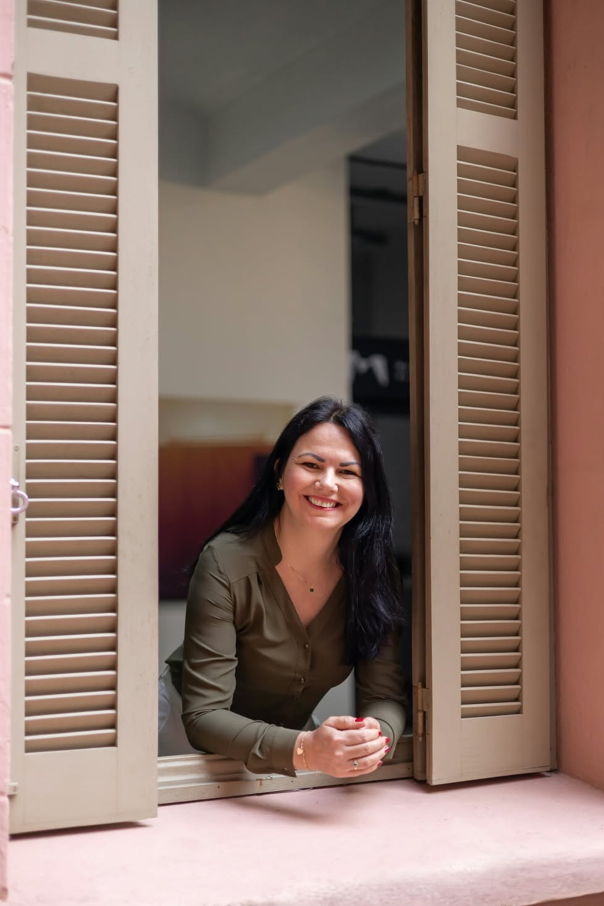

Cuidar de si é também construir novos caminhos.
Um espaço de escuta, acolhimento e compreensão para quem deseja cuidar da saúde emocional e viver com mais equilíbrio.
- Online e presencialPorto Alegre e Gravataí
- Abordagem TCCTerapia Cognitivo Comportamental
- Adolescentes e adultosSessões de cerca de 50 minutos
Um espaço para acolher suas emoções, compreender sua história e construir novos caminhos.
Sobre mim
Sou Lilian Graziela, psicóloga clínica (CRP 07/46995), e acredito que cada pessoa possui uma história única, que merece ser acolhida com respeito, empatia e sem julgamentos.
Minha atuação é voltada ao atendimento de adolescentes e adultos, auxiliando em questões relacionadas à ansiedade, depressão, autoestima, relacionamentos e dificuldades emocionais.
Trabalho com a Terapia Cognitivo-Comportamental (TCC), uma abordagem fundamentada em evidências científicas que busca compreender a relação entre pensamentos, emoções e comportamentos, promovendo autoconhecimento e o desenvolvimento de estratégias para lidar com os desafios da vida.
Meu propósito é oferecer um espaço de escuta, acolhimento e confiança, respeitando a individualidade e o tempo de cada pessoa.
- Atuação
- Psicologia clínica
- Público
- Adolescentes e adultos
- Abordagem
- Terapia Cognitivo Comportamental (TCC)
Como posso te ajudar
Escolha um tema para saber mais sobre como o acompanhamento pode ajudar.
Atendimentos
- OnlineDe onde você estiver, com a mesma qualidade de escuta.
- PresencialPorto Alegre e Gravataí.
- Sessões de aproximadamente 50 minutosEm um ritmo combinado entre nós.
Como é o primeiro atendimento
- 1
Você entra em contato
Pelo WhatsApp, combinamos dia, horário e se será online ou presencial.
- 2
Primeira conversa
Você conta o que te trouxe até aqui, tira dúvidas e entende como a terapia funciona.
- 3
Seguimos juntas(os)
Definimos objetivos e o ritmo do acompanhamento a partir da sua necessidade.

Dar o primeiro passo já é cuidar de si.
Se você sente que é o momento de ser ouvida(o), envie uma mensagem. Vamos conversar sobre como posso te acompanhar.
- WhatsApp(51) 98554-9869
- Instagram@liliangrazielapsi